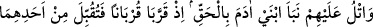
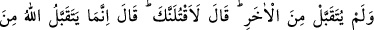
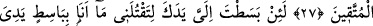
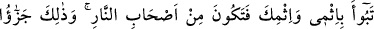
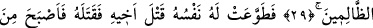
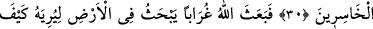
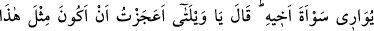
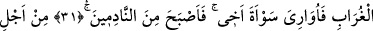
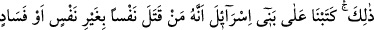
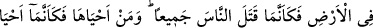
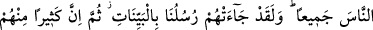
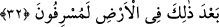
HÂBİL – KÂBİL KISSASI,
CANA KIYMAK
27- Onlara, Âdem’in iki oğlunun haberini gerçek olarak anlat: Hani birer kurban
sunmuşlardı da birisinden kabul edilmiş, diğerinden ise kabul edilmemişti. (Kurbanı
kabul edilmeyen kardeş, kıskançlık yüzünden), «Andolsun seni öldüreceğim.» dedi.
Diğeri ise: «Allah ancak takvâ sahiplerinden kabûl eder» dedi.
28- «Andolsun ki sen, öldürmek için bana elini uzatsan (bile) ben sana, öldürmek
için el uzatacak değilim. Ben, âlemlerin Rabbi olan Allah’tan korkarım.»
29- «Ben istiyorum ki, sen, hem benim günahımı hem de kendi günahını yüklenip
cehennemliklerden olasın; zâlimlerin cezâsı işte budur.»
30- Nihâyet nefsi onu, kardeşini öldürmeye itti ve onu öldürdü. Bu yüzden de
hüsrâna uğrayanlardan oldu.
31- Derken Allah, kardeşinin cesedini nasıl gömeceğini ona göstermek için yeri
eşeleyen bir karga gönderdi. (Katil kardeş) «Yazıklar olsun bana! Şu karga kadar
da olamadım mı ki, kardeşimin cesedini gömeyim.» dedi ve yaptığına pişman
olanlardan oldu.
32- İşte bu yüzdendir ki İsrâiloğulları’na şöyle yazmıştık: Kim, bir cana kıyarsa